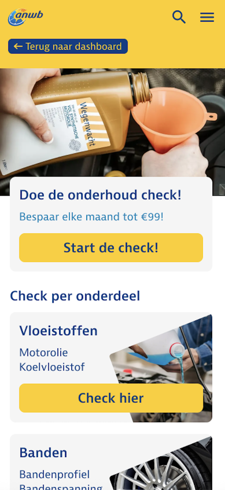
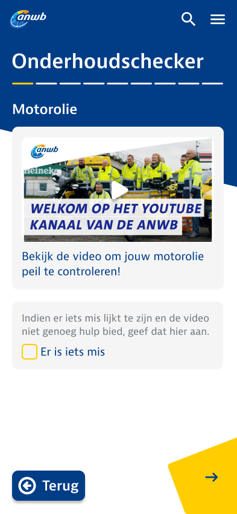
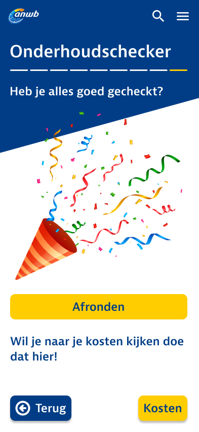

Hey, ik ben Lotte!
Met structuur, betrokkenheid en een open blik streef ik naar groei, geluk en betekenisvolle verbindingen.
Mijn werk
ANWB
In mijn eerste jaar CMD (2025) ontwierp ik met mijn team een prototype voor de ANWB. Veel mensen stellen autoonderhoud uit omdat het duur en ingewikkeld lijkt. Daarom bedachten we een tool die hen helpt hun auto in de gaten te houden. Mijn deel was de onderhoudschecker: een stappenplan met filmpjes waarmee je zelf basiscontroles uitvoert, met een doorverwijzing naar een garage in de buurt als er iets mis is. Het is het project waar ik tot nu toe het meest trots op ben, en ik vond het erg leuk om het uit te werken in Figma. Wil je meer hierover lezen klik dan hier!



Meer werk
Wil je meer van mijn werk zien? Klik dan vooral hier en enjoy!!
Mijn skills
Op mijn studie leer ik veel verschillende skills. Ook van mijn oude opleidingen heb ik veel skills meegenomen, zoals programmeren. Zelf vind ik front-endtalen leuker en daarom ben ik hier ook beter in. Naast programmeerskills wil ik mij vooral specialiseren in design. Dit vind ik ontzettend leuk om te doen en gaat mij beter af dan programmeren. Hieronder zie je een aantal van mijn skills.
HTML
CSS
Figma